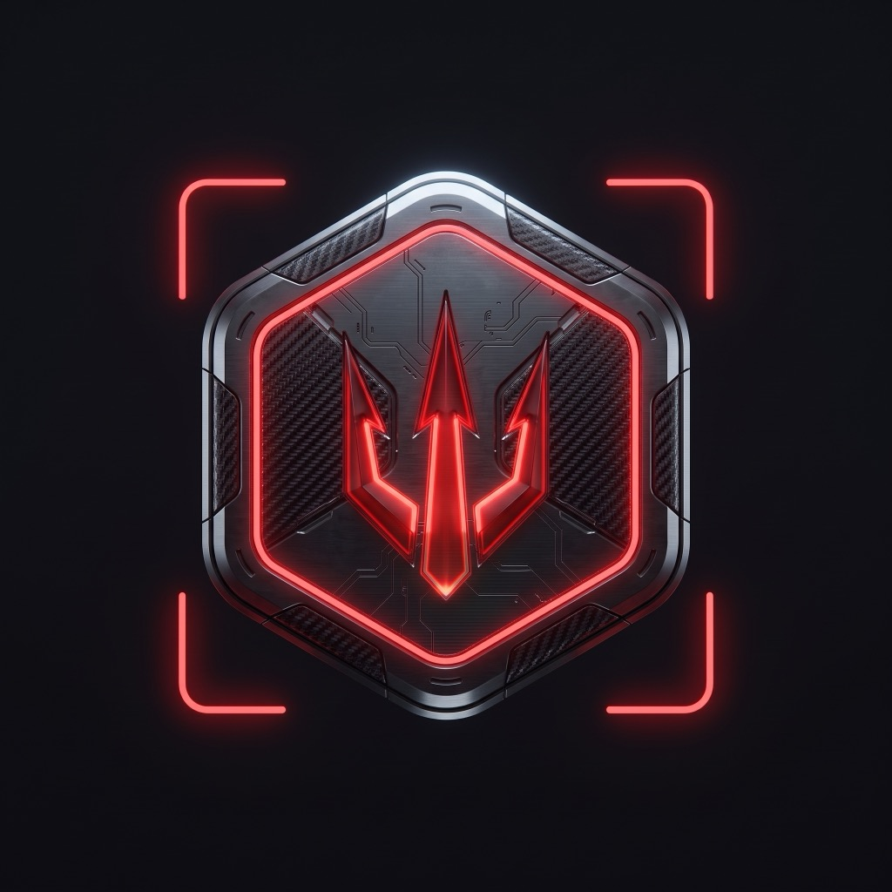

// Guardian of the Gate

Cerberus
Self-hosted AI, behind a guarded gate
// The roster
16
sandboxed agents
// The cage
Fails
closed
// The cockpit
One command
center
cerberus@localhost — boot
› sandbox
armed · fails closed
› agents
16
online
› command center
SYS ONLINE
Cerberus
github.com/ItsEliias/Cerberus
Self-hosted · Sandboxed · AGPL-3.0